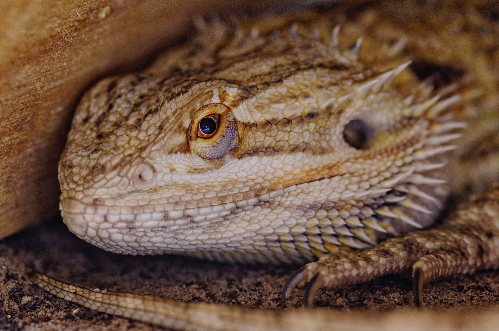
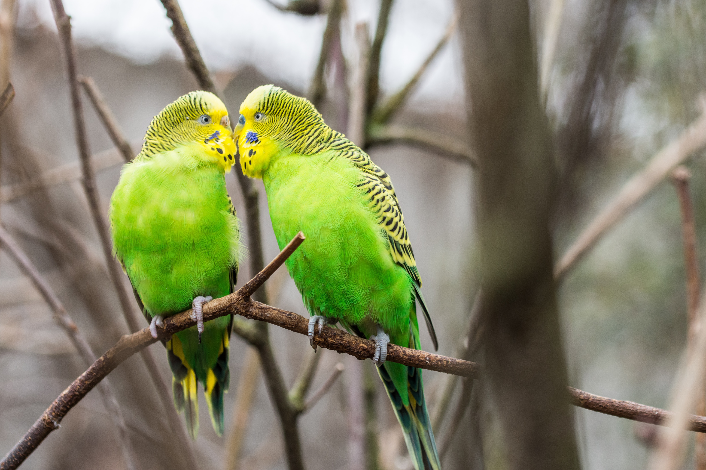

Pick My Pet Quiz
Are you ready to find the perfect pet for you? This quiz will help us determine what kind of animal would
best suit your environment and ability to care for them. You will encounter 25 questions and at the end,
receive
results based upon your answers. Click below to begin!